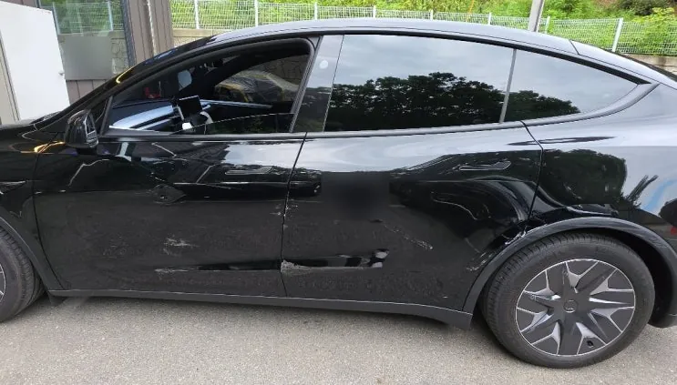
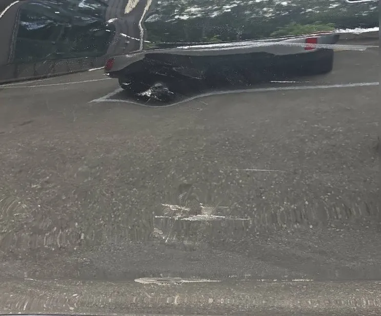
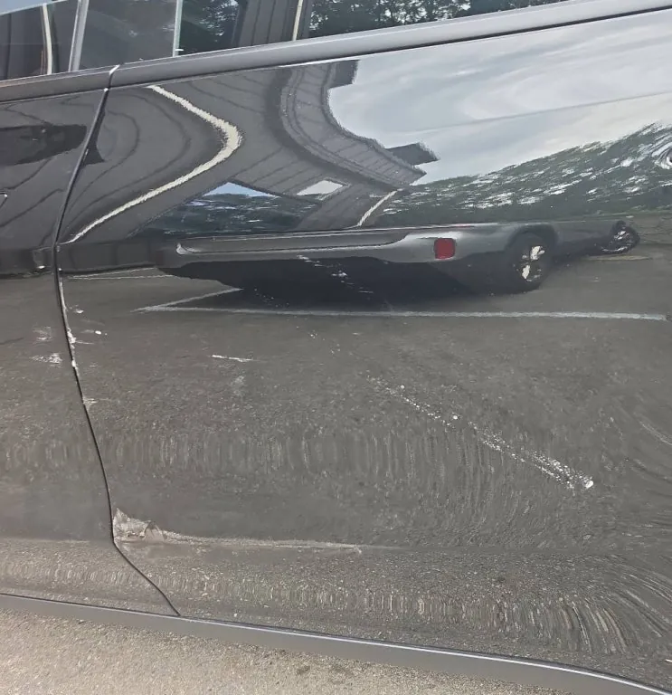
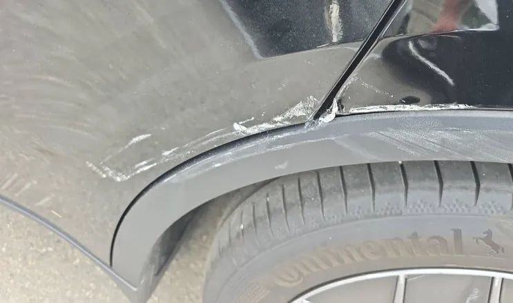
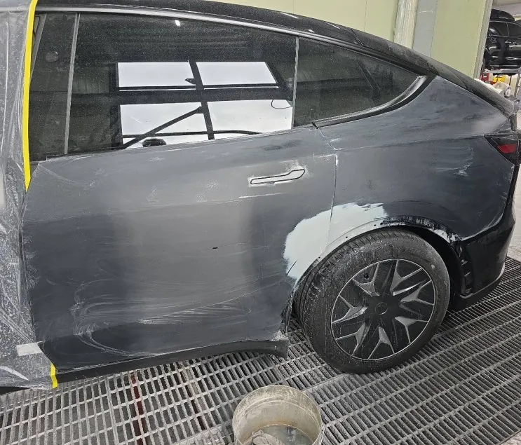
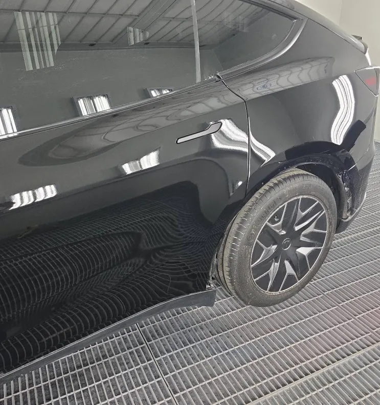
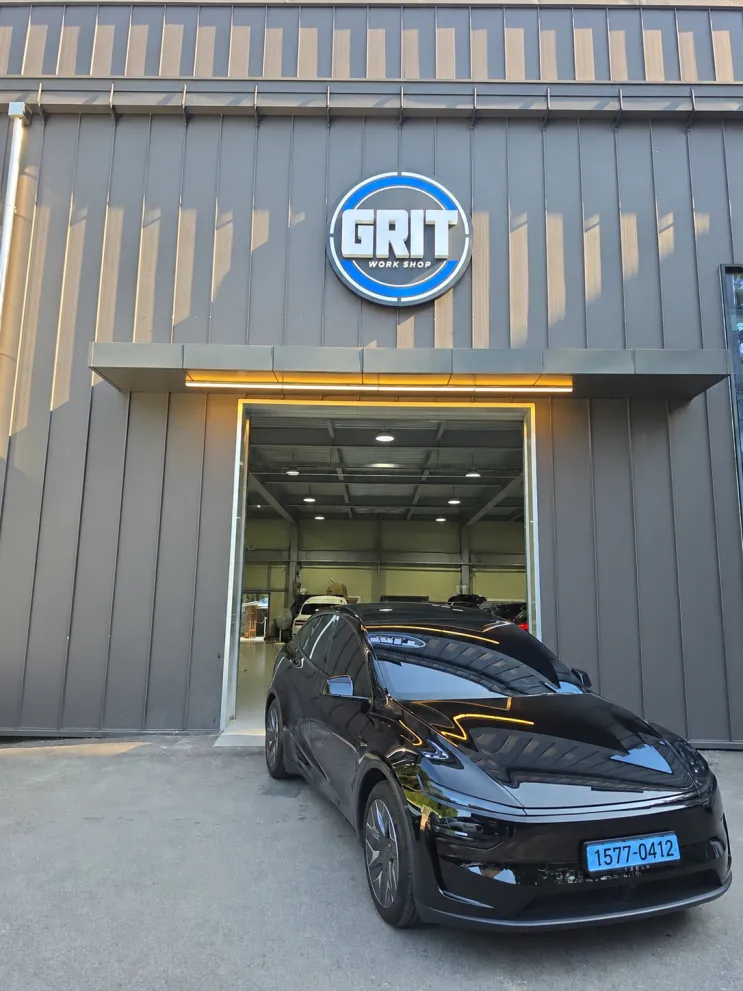

테슬라 모델Y 운전석 앞·뒤도어, 뒤휀더 사고수리
한눈에 보기
테슬라 모델Y 운전석 측면 세 패널(앞도어·뒤도어·뒤휀더)은 판금으로 형태를 잡은 뒤 퍼티와 샌딩으로 면과 캐릭터 라인을 맞추고 조색·도장했으며, 조립 후 패널 간격과 도어 여닫힘까지 확인해 출고했습니다.
- 차량
- 테슬라 모델Y
- 증상
- 운전석 앞도어 손상
- 운전석 뒤도어 손상
- 운전석 뒤휀더 손상
- 작업
- 손상 범위 점검
- 판금
- 퍼티·샌딩
- 캐릭터 라인 복원
- 조색
- 도장
- 조립
- 간격·개폐 점검
- 작업장
- 그릿서비스 · 경기도 파주시 교하로 1312-53, 1동 1층

입고 상태와 손상 범위
테슬라 모델Y가 운전석 쪽 측면 손상으로 입고됐습니다. 앞도어, 뒤도어, 뒤휀더까지 패널 세 곳에 수리가 필요한 상태였습니다.
세 패널의 손상 상태를 하나씩 확인하고, 어디까지 수리할지와 어떤 순서로 작업할지를 먼저 정리했습니다. 측면 사고는 패널이 서로 이어져 있어서, 한 곳만 따로 맞추면 옆 패널과의 간격이나 라인이 어긋나 보일 수 있습니다.


판금과 면 잡기
판금으로 패널의 형태를 먼저 잡았습니다. 그 위에 퍼티를 얇게 올리고 샌딩을 여러 번 되풀이하면서 작은 굴곡까지 평평하게 다듬었습니다.
이 과정에서 신경 쓴 것은 캐릭터 라인입니다. 앞도어에서 뒤도어, 뒤휀더로 이어지는 옆선이 원래 흐름대로 이어져야 수리 후에도 측면이 자연스럽게 보입니다.


조색과 도장
차량 색에 맞춰 조색한 뒤, 이웃 패널과 색감 차이가 나지 않도록 도장했습니다. 세 패널이 나란히 붙어 있는 측면은 한 패널만 색이 달라도 바로 눈에 띄는 곳입니다.

조립과 출고 점검
도장 후 부품을 다시 조립하고 패널 사이 간격, 도장면 상태, 도어가 걸림 없이 열리고 닫히는지를 마지막으로 확인했습니다. 옆에서 봤을 때 라인이 끊기지 않고, 색과 광택이 주변 패널과 고르게 이어지는 것을 확인한 뒤 출고했습니다.
판금과 도장은 각 공정을 맡은 정비 인력이 차량 상태에 맞춰 직접 진행했고, 공정마다 확인을 거친 뒤 출고 전에 한 번 더 점검했습니다.

모델Y, 비슷한 증상이라면 사진부터 보내 주세요
파주·운정·교하·금촌 어디서든 전화나 카톡으로 상태를 먼저 알려 주시면 확인 후 안내해 드립니다. 카톡에는 손상 부위가 보이게 찍은 사진을 함께 보내 주세요.
그릿서비스 · 경기도 파주시 교하로 1312-53, 1동 1층 · 네이버 지도
이 작업의 원문 기록: 네이버 블로그에서 보기